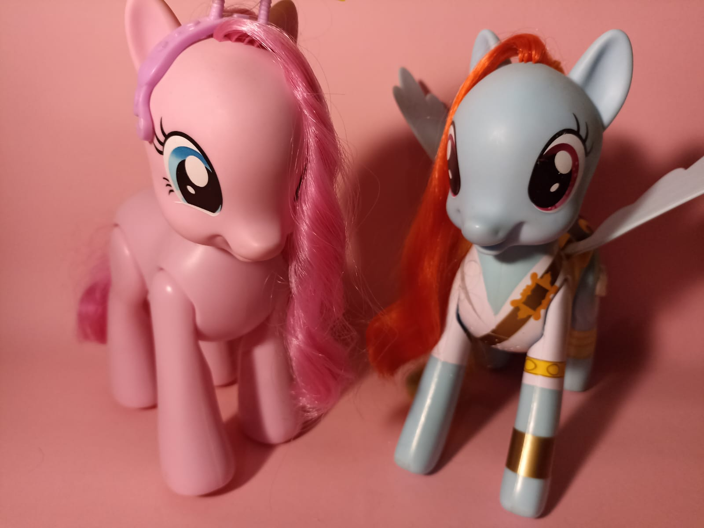
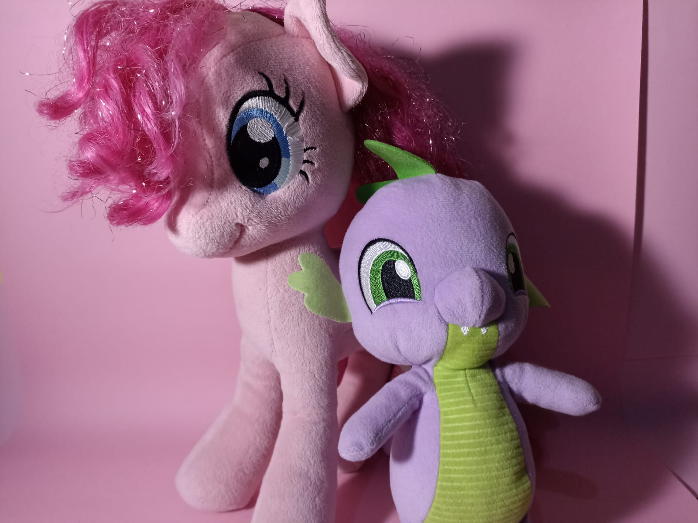
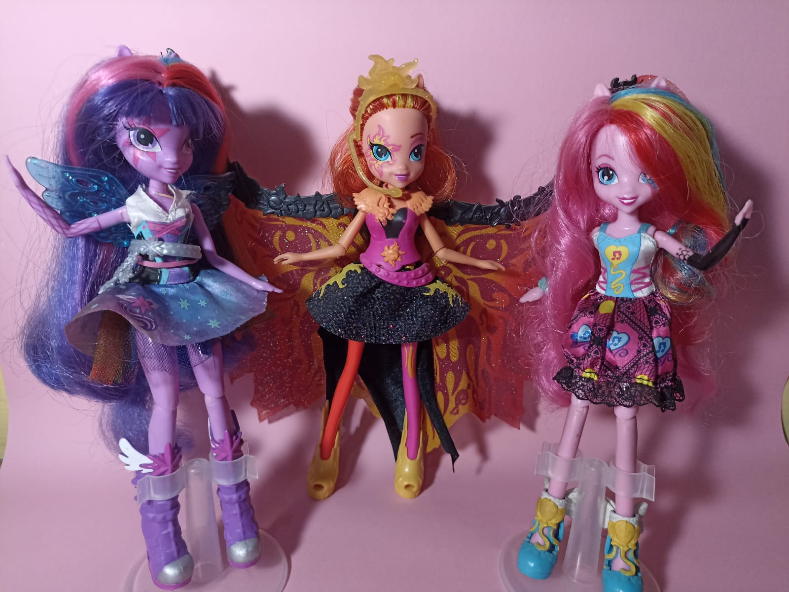

Mercancia Principal
Mas que una serie, My little Pony es principalmente una linea de juguetes distribuida por Hasbro, Inc. La serie fue lanzada para poder promocionar los jugetes, tecnica que se ha usado desde los años 80's, epoca en la cual se estreno la primer serie de Mi Pequeño Pony.
A continuacion se mostraran los diversos jugetes que ofrece Hasbro:
Ponys originales
Aqui se muestran los jugetes de Ponis que cualquiera conoce, en la imagen de referencia se muestran versiones especiales ya que pueden caminar e incluyen caja de sonido.
Peluches
No es tan común verlos en tiendas (al menos yo no llege a ver muchas en su momento😢) pero abundan muchos tipos de peluches, incluso los que son hechos por fans (a mano)
Muñecas Ecuestria Girls
Aparte de la serie, Hasbro saco una franquicia de peliculas sobre las Ponis en un ambiente de "High School" para hacerle competencia a otras muñecas como Monster High y Ever After High, que en el tiempo que las lanzaron (2013) estaban siendo muy populares, arrasando ventas en jugetes para niñas. No fue una franquicia con mucha calidad, tanto en el guion de la pelicula como en las muñecas, pero algunos modelos son rescatables
Comics
My Little Pony se extiende a varias tiras de comics publicadas por IDW Publishing desde Julio del 2012 hasta 2020. La mayoria de comics no son canon en la serie original, pero hay varios numeros y series de comics que si continuan algunas historias en la serie. Algunas series de comics son:
- My Little Pony: La Magia de la Amistad
- Es la serie principal de comics, cuenta con 52 arcos y un total de 88 numeros. Estos no llegan a ser canon para la linea temporal de la serie pero igualmente son muy entretenidos de leer para gente de todas las edades que disfrutan de la serie.
- My Little Pony: FIENDship is Magic
- Es una de las series limitadas que fue lanzada a lo largo de Abril del 2015. Se centra en contar el la historia de los antagonistas principales de la serie de una manera interesante. Cuenta con 5 números, así que no cuenta con la historia de cada antagonista, pero igualmentees son muy entretenidos aunque tampoco son del todo canon.
- My Little Pony: The Movie Prequel
- Esta fue una miniserie de comics lanzada para cubir los huecos de la Plicula del 2017, no estoy segura si esa sea la razon pero lo veo de esa manera. Se lanzaron al publico en el 2017 contando con solo 4 numeros, no los he leido, pero por las criticas son muy buenos para seguir con otras series de comic y comprender la historia y personajes.